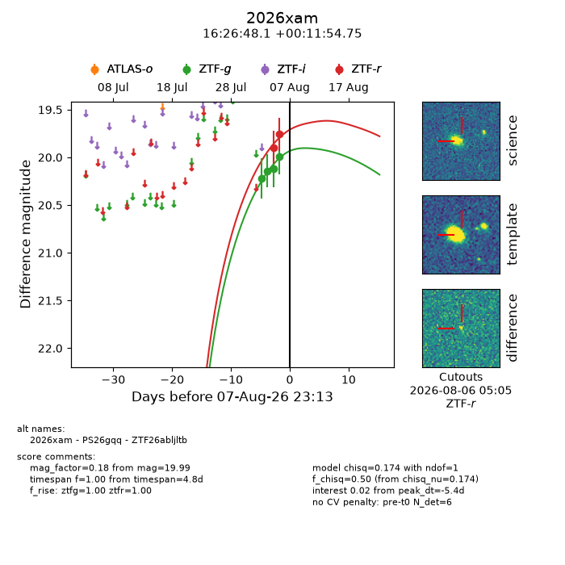
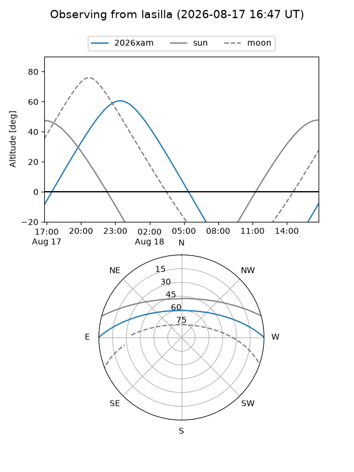
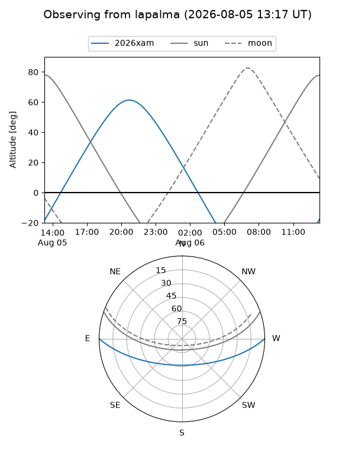
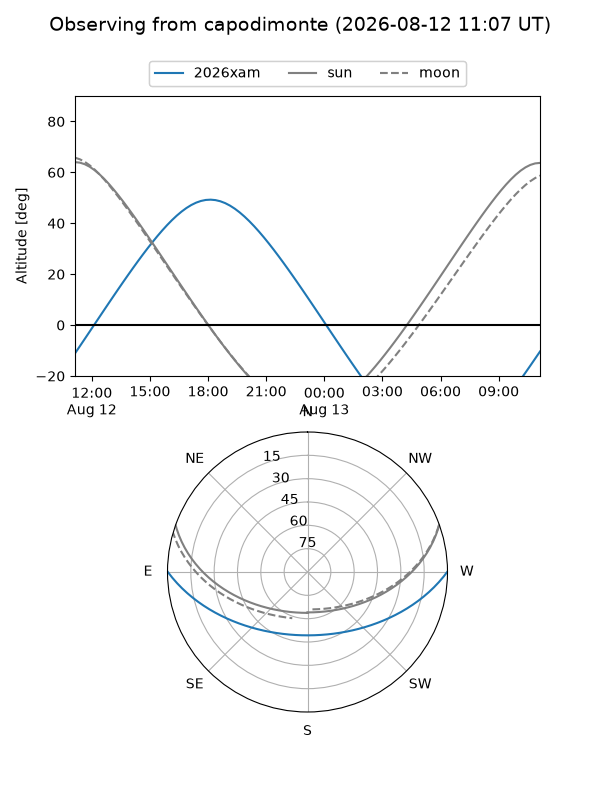
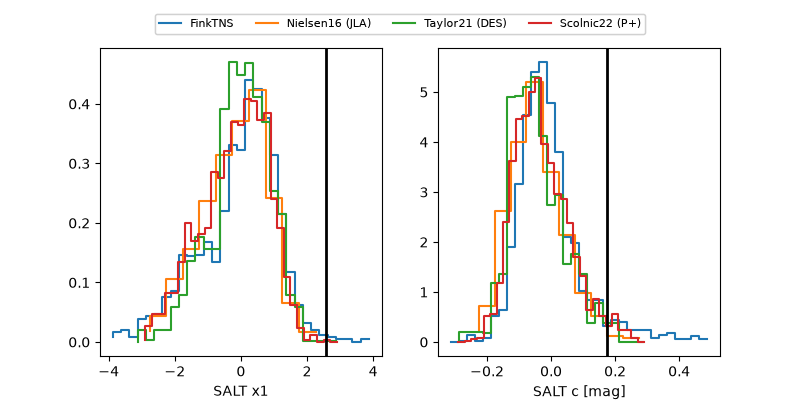

2026xam
Target 2026xam at 2026-08-07 23:16
Aliases and brokers:
FINK-ZTF: ztf.fink-portal.org/ZTF26abljltb
Lasair-ZTF: lasair-ztf.lsst.ac.uk/objects/ZTF26abljltb
ALeRCE-ZTF: alerce.online/object/ZTF26abljltb
YSE-PZ: ziggy.ucolick.org/yse/transient_detail/2026xam
TNS name: wis-tns.org/object/2026xam
Direct TNS query: direct search
alt names
ZTF26abljltb (ztf,fink_ztf)
2026xam (tns,yse)
PS26gqq (panstarrs)
Coordinates:
equatorial (ra, dec) = 246.7005,+0.19854
equatorial (HMS+DMS) = 16:26:48.13,+00:11:54.75
galactic (l, b) = (14.6996,+31.78237)
Flags:
TNS type: nan
peak dt: -5.4
Photometry:
last ztfg=19.99, ztfr=19.76
4 ztfg, 2 ztfr detections
Lightcurve

Visibility



Additional plots
